11 — Advanced reconstruction methods
Download this tutorial as a Jupyter notebook (with NotebookUtils.jl next to it).
Two mechanisms go past the "operator + regularizer" pattern the rest of the tutorials use: data fidelity terms that change how the mismatch to the measured k-space is scored, and signal models that change what the optimization variable itself is. Structured low-rank k-space filling — including ALOHA's transform-domain weighting — is presented here too, as an application of the KSpaceToImage signal model.
Contents
- Data fidelity —
L2Loss,HardConsistency,NoFidelity - Signal models —
TemporalBasis,KSpaceToImage, and calibrationless structured low-rank
using .NotebookUtils
using Ristretto
using GeometricMedicalPhantoms: create_shepp_logan_phantom, create_tubes_phantom, MRISheppLoganIntensities, TubesIntensities, TubesMask
using MIRTjim: jim
using Plots
using Ristretto.AbstractOperators: Hankel
using NamedDims
using LinearAlgebra
using Statistics
using Random
Random.seed!(0);img_pi, sens and acq_pi below are the same R = 2, 8-channel, 24-line-ACS phantom setup used throughout tutorial 4 — reproduced here so this tutorial runs standalone.
Nx, Ny, Nc = 128, 128, 8
img_pi = ComplexF32.(abs.(create_shepp_logan_phantom(Nx, Ny, :axial; ti = MRISheppLoganIntensities())))
sens = coil_sensitivities(Nx, Ny, Nc)
R = 2
acs = (Ny ÷ 2 - 11):(Ny ÷ 2 + 12)
mask_pi = falses(Ny)
mask_pi[1:R:Ny] .= true
mask_pi[acs] .= true
acq_pi = add_noise(
simulate_acquisition(
img_pi,
AcquisitionInfo(;
is3D = false, image_size = (Nx, Ny), subsampling = (:, mask_pi), sensitivity_maps = sens
); keep_sensitivity_maps = true
);
snr_db = 30
)CartesianAcquisitionInfo:
- kspace data = Array{ComplexF32}<128×76×8>
- encoding = 2D
- image size = 128×128
- sensitivity maps = ComplexF32<128×128×8>
- subsampling = (:, Vector{Bool}<128>)1. Data fidelity
IterativeReconstruction(...; fidelity = ...) chooses how the measurements enter the problem.
L2Loss()(default) — the penalty $\tfrac12\|\mathcal{A}x-y\|^2$.HardConsistency()— the constraint $\{x : \mathcal{A}x = y\}$, enforced by projection. Closed-form when $\mathcal{A}\mathcal{A}^*$ is diagonal, otherwise an inner CG.NoFidelity()— no data term at all; the "reconstruction" is then pure denoising of the initial estimate, which is occasionally what you want (or a building block for a custom model).
The choice is not a matter of taste: it is a statement about how much you trust y. An equality constraint says the measurements are exact. That is why the comparison below is run on noiseless data first — and why the second cell then shows what noise does to it.
The algorithms named below (DouglasRachford, POGM) are picked because they accept the corresponding term; tutorial 6 covers which solver goes with which problem. POGM is the default proximal-gradient solver, and is named explicitly here only so the comparison reads as a statement about the fidelity term with everything else held fixed.
# A 4x variable-density mask, first with exact (noiseless) measurements.
acq_us = AcquisitionInfo(;
is3D = false, image_size = (Nx, Ny), sensitivity_maps = sens,
subsampling = create_sampling_pattern(
VariableDensitySampling(PolynomialDistribution(3), 4.0, 0.05), (Nx, Ny)
),
)
data_clean = simulate_acquisition(img_pi, acq_us; keep_sensitivity_maps = true)
data_us = add_noise(data_clean; snr_db = 30)
x_l2 = reconstruct(data_clean, IterativeReconstruction(L1Wavelet2D(2.0f-3); maxit = 40))
x_hc = reconstruct(
data_clean,
IterativeReconstruction(
L1Wavelet2D(2.0f-3); fidelity = HardConsistency(maxit = 20),
algorithm = DouglasRachford(), maxit = 40
)
)
x_nf = reconstruct(
data_clean,
IterativeReconstruction(L1Wavelet2D(2.0f-3); fidelity = NoFidelity(), algorithm = POGM(), maxit = 20)
)
println("zero-filled ", round(nrmse(reconstruct(data_clean), img_pi), digits = 4))
println("L2Loss ", round(nrmse(x_l2, img_pi), digits = 4))
println("HardConsistency ", round(nrmse(x_hc, img_pi), digits = 4))
println("NoFidelity ", round(nrmse(x_nf, img_pi), digits = 4), " (denoising of the initial estimate)")
side_by_side(
unname(x_l2), unname(x_hc), unname(x_nf);
titles = ("L2Loss", "HardConsistency", "NoFidelity"), size = (1200, 350)
)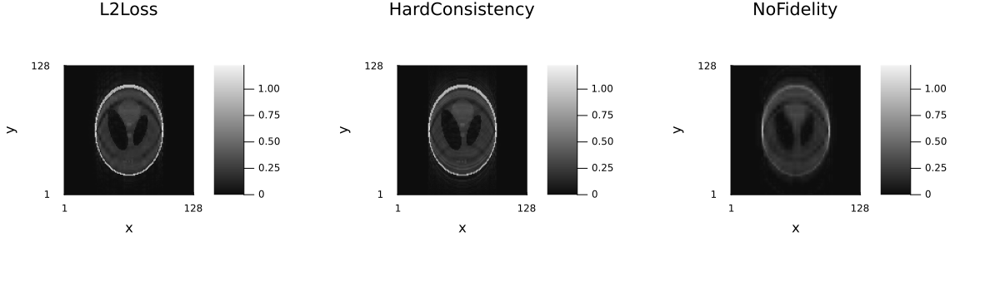
NoFidelity is the outlier, and it should be: with no data term the solver never looks at y at all, so it can only denoise the zero-filled adjoint it started from. The aliasing the other two undo is merely smoothed, which is why the result lands slightly behind the zero-filled image it began with. It is a building block, not a reconstruction.
Why HardConsistency is a statement about the noise
$\{x : \mathcal{A}x = y\}$ asks the solution to reproduce every measured sample exactly — noise included. With a well-conditioned encoding that is harmless. With sensitivity maps and heavy undersampling, $\mathcal{A}\mathcal{A}^*$ has very small eigenvalues, and satisfying the constraint along those directions means multiplying the noise by their inverse. The projection is doing exactly what was asked, so the failure mode is silent: the error grows the harder the solver works.
for label in ("noiseless", "SNR 30 dB")
data = label == "noiseless" ? data_clean : data_us
errs = map((10, 40, 100)) do maxit
x̂ = reconstruct(
data,
IterativeReconstruction(
L1Wavelet2D(2.0f-3); fidelity = HardConsistency(maxit = 20),
algorithm = DouglasRachford(), maxit = maxit
)
)
round(nrmse(x̂, img_pi), digits = 4)
end
println(rpad(label, 12), " HardConsistency NRMSE at maxit = 10 / 40 / 100: ", join(errs, " "))
end
x_l2_noisy = reconstruct(data_us, IterativeReconstruction(L1Wavelet2D(2.0f-3); maxit = 40))
println("SNR 30 dB L2Loss NRMSE at maxit = 40: ", round(nrmse(x_l2_noisy, img_pi), digits = 4))noiseless HardConsistency NRMSE at maxit = 10 / 40 / 100: 0.2948 0.2427 0.1875
SNR 30 dB HardConsistency NRMSE at maxit = 10 / 40 / 100: 0.5957 0.7662 0.9839
SNR 30 dB L2Loss NRMSE at maxit = 40: 0.2167On exact data more iterations help, as they should. On noisy data the same run gets worse with every iteration, and ends far behind the L2Loss reconstruction of the same data. The rule that follows:
L2Lossis the default for measured data, because $\tfrac12\|\mathcal{A}x-y\|^2$ tolerates noise by construction and the regularizer sets how much.HardConsistencybelongs where the constraint is well posed: essentially noiseless data, or — much more usefully — a problem in which $\mathcal{A}\mathcal{A}^*$ is diagonal, where the projection is closed-form and needs no inner CG at all. That is exactly the case for theKSpaceToImagesignal model of §2.2, and it is whySPIRiT(; iterative = true)uses hard consistency: there $\mathcal{A}$ is the subsampling operator, so "keep the measured samples" really is just "keep the measured samples".NoFidelityis for denoising an estimate you already have, or as a component of a custom model.
2. Signal models
A regularizer says what an image should look like. A signal model goes further: it changes what the optimization variable is, so that the unknown is smaller than the image series and the model is imposed exactly rather than penalized.
variable ──ℳ──▶ image series ──𝒜──▶ k-space
c x(r, t) yRistretto ships two: TemporalBasis, whose variable is a set of subspace coefficient maps, and KSpaceToImage, whose variable is the multi-channel k-space itself.
2.1 TemporalBasis — subspace (low-rank) modelling of the time dimension
What a temporal basis is
Stack a dynamic or multi-contrast series as a Casorati matrix $X \in \mathbb{C}^{N \times N_t}$: one row per voxel, one column per frame/echo/contrast. Nothing forces $X$ to have full rank. If the signal at every voxel is one of a small family of time courses — the same exponential decay at different rates, the same cardiac cycle at different amplitudes — then those $N$ rows all live in a $K$-dimensional subspace of $\mathbb{C}^{N_t}$ with $K \ll N_t$.
Write an orthonormal basis of that subspace as the columns of $\Phi \in \mathbb{C}^{N_t \times K}$. Then
\[X \approx C\,\Phi^{\mathsf T}, \qquad\text{i.e.}\qquad x(r, t) \;=\; \sum_{k=1}^{K} \Phi(t, k)\, c(r, k),\]
and the unknown is the coefficient array $c \in \mathbb{C}^{N_x \times N_y \times K}$ rather than the $N_x \times N_y \times N_t$ series. TemporalBasis(Φ; time_dim) installs exactly this map, so the operator the solver sees is $\mathcal{A}\,\mathcal{M}_\Phi$ and the reconstruction solves for $c$; reconstruct expands the result back to the full series before returning it.
Two things follow, and they are the whole reason to do it:
- The problem shrinks. $K/N_t$ as many unknowns, so a given number of measurements goes further — this is what makes high accelerations feasible.
- The model is a hard constraint, not a penalty. Anything outside the subspace — including most of the noise, and undersampling artifacts that do not resemble a plausible time course — cannot be represented at all. A subspace reconstruction denoises for free.
This is the "low-rank"/"partially separable" idea of Liang's k-t PCA line of work (Liang 2007; Pedersen 2009; Petzschner 2011), and it is what T2-shuffling (Tamir et al., MRM 2017) and MR fingerprinting reconstructions are built on.
A phantom that really is low-dimensional
The tubes phantom from GeometricMedicalPhantoms is the natural object here: it is a physical relaxometry phantom — six tubes of doped fluid in a water-filled cylinder — and each tube is one compartment with one $T_2$ and one proton density. Passing a vector of TubesIntensities to create_tubes_phantom returns one frame per element, so the whole multi-echo series is the analytic spin-echo decay $M_0 e^{-\mathrm{TE}/T_2}$ evaluated per tube at 24 echo times. Seven compartments, seven exponentials: a genuinely low-dimensional series, which is what this section is about.
n, nt, ncoils = 96, 24, 4
tube_T2 = Float64[25, 45, 70, 110, 180, 300] # ms, one per tube (short to long)
tube_M0 = Float64[0.55, 0.7, 0.8, 0.9, 0.95, 1.0]
cylinder_T2, cylinder_M0 = 500.0, 0.25 # the surrounding water bath
TE = collect(range(10, 240; length = nt)) # ms
echo_intensities = [
TubesIntensities(;
outer_cylinder = cylinder_M0 * exp(-te / cylinder_T2),
tube_wall = 0.0,
tube_fillings = tube_M0 .* exp.(-te ./ tube_T2),
) for te in TE
]
series = NamedDimsArray{(:x, :y, :time)}(
create_tubes_phantom(n, n, :axial; ti = echo_intensities, eltype = ComplexF32)
)
side_by_side(
unname(series)[:, :, 1], unname(series)[:, :, 8], unname(series)[:, :, 24];
titles = ("TE = $(round(Int, TE[1])) ms", "TE = $(round(Int, TE[8])) ms", "TE = $(round(Int, TE[end])) ms"),
size = (1100, 340)
)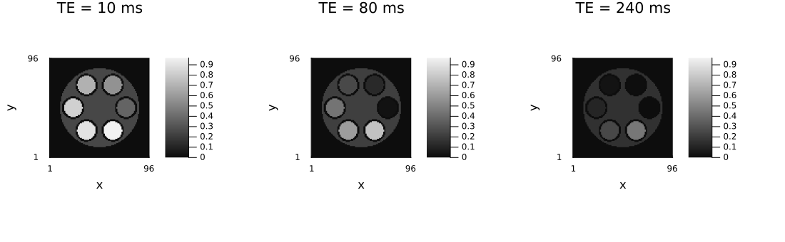
plot(
TE, [[tube_M0[i] * exp(-te / tube_T2[i]) for te in TE] for i in eachindex(tube_T2)];
label = reshape(["tube $i (T2 = $(round(Int, tube_T2[i])) ms)" for i in eachindex(tube_T2)], 1, :),
lw = 2, xlabel = "TE (ms)", ylabel = "signal", title = "Tube signal evolutions",
legend = :outertopright, size = (800, 350)
)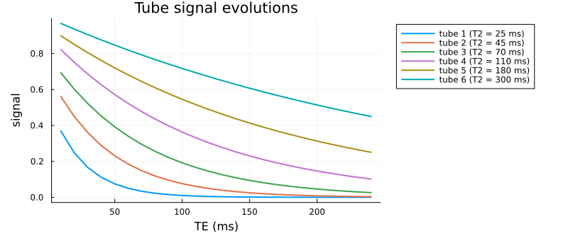
How low-dimensional? The Casorati spectrum
The singular values of the Casorati matrix say how many basis functions the series actually needs. A handful of exponentials at different rates is a textbook low-rank family.
casorati = reshape(unname(series), n * n, nt)
F = svd(casorati)
σ = F.S ./ F.S[1]
plot(
1:nt, max.(σ, 1.0e-8);
yscale = :log10, lw = 2, marker = :circle, label = "",
xlabel = "index", ylabel = "singular value / largest",
title = "Casorati spectrum of the echo series", size = (650, 330)
)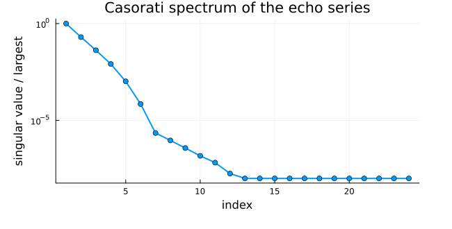
Where the basis comes from in practice
The SVD above uses the ground-truth series, which you do not have at reconstruction time. In practice $\Phi$ comes from a dictionary of plausible signal evolutions, simulated from the sequence:
- Sweep the tissue parameters over the physiological range ($T_2$ here; $T_1$/$T_2$/$B_1$ for fingerprinting).
- Simulate the signal each parameter combination would produce under the actual pulse sequence — an analytic expression for a simple decay, an extended phase graph or a full Bloch simulation for anything realistic.
- Take the leading $K$ left singular vectors of that dictionary. They span the signal manifold without ever having seen the patient.
This is exactly the recipe in Tamir et al. 2017 and in the fingerprinting literature; the k-t PCA variants instead build the dictionary from low-resolution training data acquired in the same scan.
# Step 1-2: a "Bloch-simulated" dictionary — here the analytic spin-echo decay over a log-spaced
# T2 range, which is what the extended-phase-graph simulation reduces to for this sequence.
T2_dict = exp.(range(log(15), log(400); length = 256))
dictionary = Float32[exp(-te / t2) for te in TE, t2 in T2_dict]
# Step 3: the temporal basis.
Φ_full = Matrix{ComplexF32}(svd(dictionary).U)
println("dictionary: ", size(dictionary), " basis: ", size(Φ_full))
plot(
TE, real.(Φ_full[:, 1:5]);
lw = 2, label = ["Φ₁" "Φ₂" "Φ₃" "Φ₄" "Φ₅"],
xlabel = "TE (ms)", ylabel = "amplitude", title = "Leading dictionary basis functions",
size = (700, 350)
)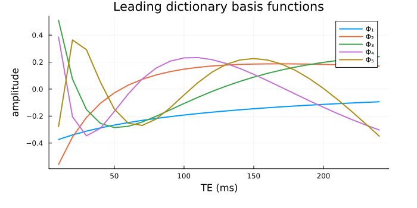
How many basis functions? The projection error
Before running any reconstruction, the basis can be scored directly: project the true series onto the first $K$ dictionary components and measure what is lost. That is the model error floor — no reconstruction using this basis can do better.
proj_err = Float64[]
for K in 1:12
Φ = Φ_full[:, 1:K]
projected = casorati * conj(Φ) * transpose(Φ)
push!(proj_err, norm(projected - casorati) / norm(casorati))
end
data_svd_err = [sqrt(sum(abs2, F.S[(K + 1):end]) / sum(abs2, F.S)) for K in 1:12]
plot(
1:12, [proj_err data_svd_err];
yscale = :log10, lw = 2, marker = :circle,
label = ["dictionary basis" "data SVD (unattainable)"],
xlabel = "number of basis functions K", ylabel = "relative projection error",
title = "Model error floor vs. K", size = (700, 350)
)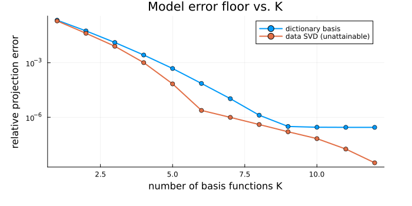
The dictionary basis tracks the (unattainable) data SVD closely and the error falls off a cliff by $K \approx 4$–$6$: six exponentials at six rates need six components, and the dictionary found them without being told the tissue parameters.
Reconstruction at K = 2, 4, 8
Now undersample. All echoes share one phase-encoding pattern here — a real subspace acquisition would vary it per echo, which helps considerably more — and the data is noisy, so both effects a subspace model is good at are in play.
smaps_dyn = NamedDimsArray{(:x, :y, :coil)}(coil_sensitivities(n, n, ncoils))
mask_dyn = falses(n)
mask_dyn[1:3:n] .= true
mask_dyn[(n ÷ 2 - 5):(n ÷ 2 + 5)] .= true
println("acceleration: ", round(n / sum(mask_dyn), digits = 2), "×")
acq_dyn = AcquisitionInfo(;
is3D = false, image_size = (n, n), sensitivity_maps = smaps_dyn, subsampling = (:, mask_dyn)
)
data_dyn = add_noise(simulate_acquisition(series, acq_dyn; keep_sensitivity_maps = true); snr_db = 25)
println("k-space: ", size(data_dyn.kspace_data), " ", dimnames(data_dyn.kspace_data))acceleration: 2.46×
┌ Warning: simulate_acquisition: the phantom has the reconstruction's size 96×96, so the data are simulated with the operator that will reconstruct them (the inverse crime), and reconstructions look better than they would on measured data. Simulate from a finer, area-sampled phantom, e.g. 152×152; pass `inverse_crime_check = false` where the consistency is intended.
└ @ Ristretto ~/work/Ristretto.jl/Ristretto.jl/src/simulation/simulate_acquisition.jl:313
k-space: (96, 39, 4, 24) (:kx, :ky, :coil, :time)x_zf_dyn = reconstruct(data_dyn)
x_cg_dyn = reconstruct(data_dyn, IterativeReconstruction(; algorithm = CGNR(), maxit = 40))
println("zero-filled ", round(nrmse(x_zf_dyn, series), digits = 4))
println("CG, no signal model ", round(nrmse(x_cg_dyn, series), digits = 4))
subspace_recons = Dict{Int, Any}()
for K in (1, 2, 4, 8)
x̂ = reconstruct(
data_dyn,
IterativeReconstruction(;
signal_model = TemporalBasis(Φ_full[:, 1:K]; time_dim = :time),
algorithm = CGNR(), maxit = 40
)
)
subspace_recons[K] = x̂
println("TemporalBasis, K = ", rpad(K, 2), " ", round(nrmse(x̂, series), digits = 4))
endzero-filled 0.258
CG, no signal model 0.1685
TemporalBasis, K = 1 0.2219
TemporalBasis, K = 2 0.0742
TemporalBasis, K = 4 0.0687
TemporalBasis, K = 8 0.0977The pattern is the one to remember: $K = 1$ underfits — a single decay cannot describe six tissues — while $K = 8$ starts spending its extra components on noise. The best $K$ sits just past the knee of the projection-error curve, and the subspace reconstruction beats the unconstrained CG reconstruction by a wide margin even though it is solving for a third as many unknowns.
side_by_side(
unname(series)[:, :, 12], unname(x_cg_dyn)[:, :, 12],
unname(subspace_recons[2])[:, :, 12], unname(subspace_recons[4])[:, :, 12];
titles = ("truth, echo 12", "CG, no model", "K = 2", "K = 4")
)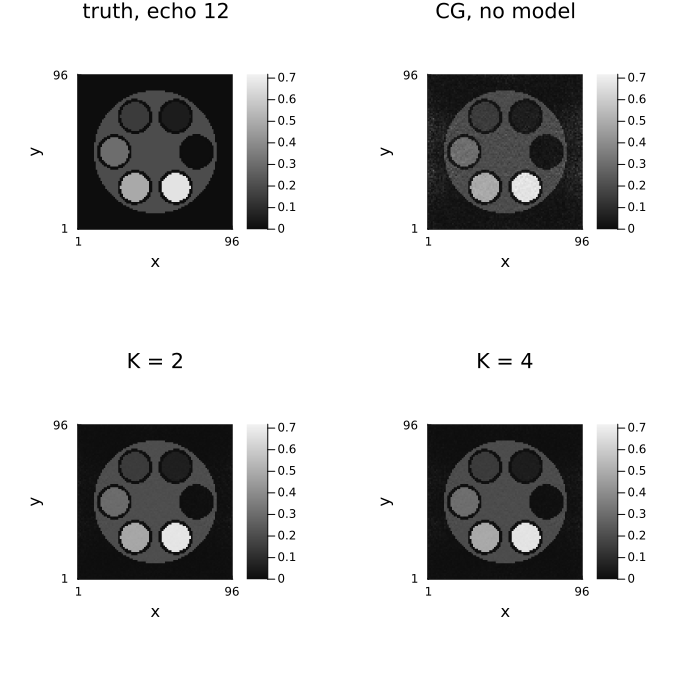
difference_image(
unname(subspace_recons[4])[:, :, 12], unname(series)[:, :, 12];
title = "K = 4 error, echo 12", size = (450, 380)
)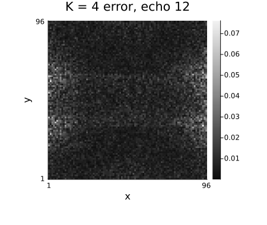
Because the coefficient maps are the variable, the fitted decay curve is available everywhere, not just the images — which is the point of the whole exercise for parameter mapping.
# The ROI is one tube, isolated with `TubesMask`: only the third tube's filling is selected.
roi = create_tubes_phantom(
n, n, :axial;
ti = TubesMask(; outer_cylinder = false, tube_wall = false, tube_fillings = [i == 3 for i in 1:6])
)[:, :, 1] .> 0
plot(
TE, [
[mean(abs.(unname(series))[roi, k]) for k in 1:nt],
[mean(abs.(unname(x_cg_dyn))[roi, k]) for k in 1:nt],
[mean(abs.(unname(subspace_recons[4]))[roi, k]) for k in 1:nt],
];
lw = 2, label = ["truth" "CG, no model" "K = 4 subspace"],
xlabel = "TE (ms)", ylabel = "mean |x| in tube 3 (T2 = $(round(Int, tube_T2[3])) ms)",
title = "Recovered signal evolution", size = (700, 350)
)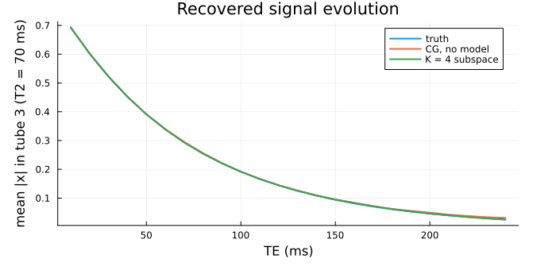
Other places this model is the right one
- Quantitative / parameter mapping. Multi-echo $T_2$ (above), inversion-recovery $T_1$, multi-echo $T_2^{*}$ and $B_0$ mapping, diffusion with many $b$-values. The dictionary is a forward simulation of the sequence, and the parameter map is fitted afterwards from the reconstructed evolutions.
- MR fingerprinting. The same construction with a much larger dictionary over $(T_1, T_2, B_1, \ldots)$; the subspace reconstruction is the standard way to make the highly-undersampled fingerprinting time series tractable.
- Dynamic contrast enhancement. The dictionary is a family of plausible enhancement curves (arterial input convolved with tissue responses) rather than a Bloch simulation.
- Cardiac cine and real-time imaging. The k-t PCA family, with the basis learned from training data acquired in the same scan. Beware: cine dynamics are driven by motion, and a moving edge is much less low-rank than a decaying exponential — expect to need more components, or a locally low-rank model instead (see tutorial 7).
When the low-dimensional structure is real but you cannot write down a basis in advance, use a low-rank regularizer (LowRank, LocallyLowRank, tutorial 7) instead: same intuition, learned during the solve, at the cost of a penalty rather than a hard constraint.
2.2 KSpaceToImage — solving in the k-space domain
The other signal model turns the problem inside out. The optimization variable is the full multi-channel k-space $k \in \mathbb{C}^{N_x \times N_y \times N_c}$; the encoding operator during the solve is then just the subsampling operator $\mathcal{P}$, so data consistency is $\mathcal{P}k = y$ and needs no Fourier transform and no sensitivity maps at all. The result is mapped to an image afterwards by an inverse FFT and the model's own coil_combination.
\[\hat k = \arg\min_k\; \tfrac12\|\mathcal{P}k - y\|^2 + \mathcal{R}(k), \qquad \hat x = \text{combine}(\mathcal{F}^{-1}\hat k)\]
This is the natural home for any regularizer that is a statement about k-space rather than about the image — SPIRiTConsistency being the example the package ships, and structured low-rank methods being the other family. SPIRiT(; iterative = true) lowers to precisely this: a KSpaceToImage variable, a SPIRiTConsistency term built from the calibrated kernel, and hard data consistency.
Because $\mathcal{P}\mathcal{P}^*$ is diagonal, HardConsistency() is closed-form here, which is why the lowered SPIRiT can use it without an inner CG.
# Plain CG in the k-space domain, no k-space regularizer: this just interpolates nothing and
# combines the coils, so it is the k-space-domain spelling of a zero-filled reconstruction.
x_ksp = reconstruct(
acq_pi,
IterativeReconstruction(;
signal_model = KSpaceToImage(AdjointSensitivity()), algorithm = CGNR(), maxit = 10
)
)
println("KSpaceToImage, no k-space prior ", round(nrmse(x_ksp, img_pi), digits = 4))
# Adding the SPIRiT self-consistency term is what makes the k-space variable pay off — this is the
# hand-built version of `SPIRiT(; iterative = true)`.
kernel = Ristretto._calibrate_spirit_kernel(
acq_pi, SPIRiT(kernel_size = (5, 5), calib_size = (Nx, 24))
)
x_ksp_spirit = reconstruct(
acq_pi,
IterativeReconstruction(
SPIRiTConsistency(kernel; λ = 1.0);
signal_model = KSpaceToImage(RootSumSquares()),
# POGM carries the gradient-based adaptive restart by default, which is what the
# `FISTA(adaptive = true)` this cell used to name was after.
fidelity = HardConsistency(), algorithm = POGM(), maxit = 30
)
)
println("KSpaceToImage + SPIRiTConsistency ", round(nrmse(x_ksp_spirit, img_pi), digits = 4))
side_by_side(
unname(x_ksp), unname(x_ksp_spirit);
titles = ("k-space CG, no prior", "+ SPIRiT consistency"), size = (900, 360)
)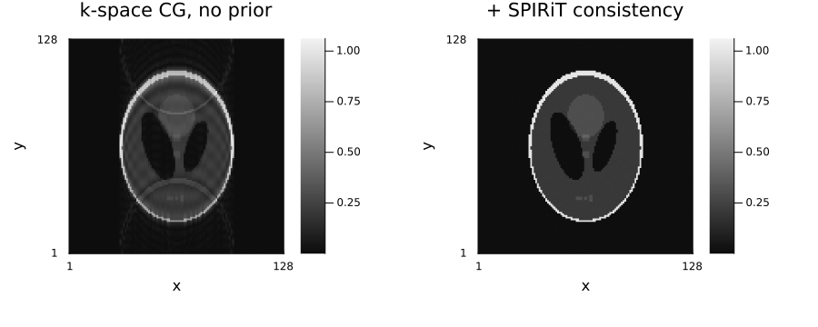
2.3 No calibration region at all: structured low-rank k-space
Both methods above need an ACS block. Take it away — an irregular sampling pattern with no fully-sampled centre — and GRAPPA has nothing to fit its kernel to and SPIRiT has nothing to calibrate $G$ from. This happens in practice more often than it sounds: prospectively undersampled scans that never acquired a calibration region, patterns where motion corrupted the centre, and acquisitions where the ACS lines would cost too much time.
The way out is to notice that the same relation GRAPPA and SPIRiT calibrate — every k-space sample is a linear combination of its neighbours across coils — can be read off the undersampled data itself, without ever writing the kernel down. Stack every sliding window of multi-coil k-space as a row of one big matrix (a block-Hankel matrix, with the coils stacked as extra columns) and that matrix is low rank exactly when such linear relations exist. So: fill in the missing samples by asking for the matrix to be low rank. No sensitivity maps, no ACS — calibrationless parallel imaging.
StructuredLowRank is that regularizer, in two forms:
StructuredLowRank(; λ, window = ...)— the nuclear norm of the lifted matrix, i.e. its convex relaxation. This is LORAKS' C-matrix penalty (Haldar 2014).StructuredLowRank(; max_rank, window = ...)— a hard cap on the rank, imposed by truncating the SVD of the lifted matrix each iteration. This is SAKE (Shin et al. 2014), and it is the Cadzow alternating-projection idea applied to MRI.
The penalty lives on k-space, not on the image, so the reconstruction is set up with signal_model = KSpaceToImage(...) — the same trick SPIRiT(; iterative = true) uses above.
# Calibrationless data: irregular ky sampling at R = 2, and no dense centre (the second argument
# of `UniformRandomSampling` is the fraction of fully-sampled central lines — here, none).
mask_cl = create_sampling_pattern(UniformRandomSampling(2.0, 0.0), (Nx, Ny))
println("sampled ky lines: ", sum(mask_cl[2]), " / ", Ny, " (no ACS block)")
acq_cl_maps = add_noise(
simulate_acquisition(
img_pi,
AcquisitionInfo(;
is3D = false, image_size = (Nx, Ny), subsampling = mask_cl, sensitivity_maps = sens
); keep_sensitivity_maps = true
);
snr_db = 30
)
# The reconstruction is handed the coil data and nothing else -- rebuilding the acquisition
# without `sensitivity_maps` is what makes this calibrationless.
acq_cl = AcquisitionInfo(
acq_cl_maps.kspace_data; is3D = false, image_size = (Nx, Ny), subsampling = mask_cl
)
# Without maps, `DirectReconstruction` returns the individual coil images, so combine them here.
rss(x) = sqrt.(dropdims(sum(abs2, unname(x); dims = 3); dims = 3))
x_zf = rss(reconstruct(acq_cl, DirectReconstruction()))
println("zero-filled RSS ", round(nrmse(x_zf, img_pi), digits = 4))sampled ky lines: 64 / 128 (no ACS block)
┌ Warning: simulate_acquisition: the phantom has the reconstruction's size 128×128, so the data are simulated with the operator that will reconstruct them (the inverse crime), and reconstructions look better than they would on measured data. Simulate from a finer, area-sampled phantom, e.g. 202×202; pass `inverse_crime_check = false` where the consistency is intended.
└ @ Ristretto ~/work/Ristretto.jl/Ristretto.jl/src/simulation/simulate_acquisition.jl:313
zero-filled RSS 0.6124Before reconstructing, it is worth looking at the object the whole method rests on. Lift the zero-filled multi-coil k-space into its block-Hankel matrix and look at the singular values: if the low-rank story is true, they should fall off a cliff. The index at which they do is the max_rank to ask for.
ksp_grid = zeros(ComplexF32, Nx, Ny, Nc)
ksp_grid[:, mask_cl[2], :] .= unname(acq_cl.kspace_data)
H_cl = Hankel(ComplexF32, (Nx, Ny), (5, 5); nchannels = Nc, channels = true)
σ_cl = svdvals(H_cl * ksp_grid)
println("lifted matrix: ", size(H_cl)[1][1], " x ", size(H_cl)[1][2])
plot(
1:length(σ_cl), σ_cl ./ σ_cl[1];
yscale = :log10, lw = 2, label = "",
xlabel = "index", ylabel = "singular value / largest",
title = "Block-Hankel spectrum, 5x5 window, 8 coils", size = (650, 330)
)
vline!([25]; ls = :dash, lw = 2, label = "max_rank = 25")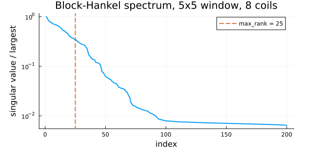
slr(reg) = reconstruct(
acq_cl,
IterativeReconstruction(
reg; signal_model = KSpaceToImage(RootSumSquares()), algorithm = ADMM(), maxit = 40
)
)
x_loraks = slr(StructuredLowRank(; λ = 1.0f-2, window = (5, 5))) # convex, LORAKS-C
x_sake = slr(StructuredLowRank(; max_rank = 25, window = (5, 5))) # non-convex, SAKE
println("zero-filled RSS ", round(nrmse(x_zf, img_pi), digits = 4))
println("LORAKS-C (nuclear) ", round(nrmse(x_loraks, img_pi), digits = 4))
println("SAKE (rank 25) ", round(nrmse(x_sake, img_pi), digits = 4))
side_by_side(
x_zf, unname(x_loraks), unname(x_sake), abs.(unname(img_pi));
titles = ("zero-filled RSS", "LORAKS-C", "SAKE", "ground truth")
)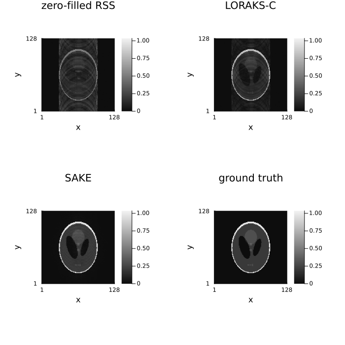
Both forms turn an unusable zero-filled image into a usable one from data that GRAPPA and SPIRiT cannot touch, and the hard-rank form is the more accurate of the two here — which is the usual finding, and the reason SAKE is stated as a rank constraint in the first place. The nuclear norm shrinks every singular value, including the ones carrying signal, so it pays a bias for its convexity.
⚠️
max_rankgives up convexity. A rank cap is a projection onto a non-convex set, and it is applied to the lifted matrix rather than to k-space itself, so a splitting algorithm using it is a heuristic: there is no convergence guarantee, and the answer depends on where the iteration starts. Theλform is convex and will not surprise you. Treat a good SAKE result as "this initialization worked", not as "this is the global optimum".
Two practical notes:
Cost is one economy SVD of the lifted matrix per iteration — here a $(N_x - 4)(N_y - 4) \times 25 N_c$ matrix — so the
windowis the knob that decides whether this is affordable.(5, 5)or(6, 6)in 2D,(4, 4, 4)in 3D.structurechooses which matrix is lifted, and the three available are not interchangeable — they encode different priors::c(the default, used above) — the plain block-Hankel (C) matrix. Low rank through the coil relations, and through limited spatial support. This is SAKE / LORAKS-C / ALOHA, and the only structureweights(section 2.4) applies to.:s— LORAKS' S-matrix, which reads k-space on both sides of DC and is low rank when the image phase varies smoothly. That is the phase constraint of P-LORAKS, and it needs no phase calibration. Because it constrains phase rather than coil relations, it is useful on single-channel data too, where:chas almost nothing to work with.:g— Haldar's other phase construction, the G-matrix. Offered as the weaker sibling of:s: by the paper's own analysisGis rank-deficient but not necessarily low rank unless the support is limited as well, so prefer:sunless you are reproducing G-matrix results.
:sand:gare real matrices with twice the rows and columns ofC, so their prox costs about 2.7× as much per iteration (76 ms against ~210 ms on a 64²×8 slab with a(5, 5)window). LORAKS proper imposes both constraints at once, which here means twoComponentterms — one:c, one:s— each with its ownλ.kspace_centertells:sand:gwhere DC sits. It defaults to Ristretto's centered convention (N ÷ 2 + 1); data declared withshifted_kspace_dims, where DC is at index 1, has to say so.
2.4 ALOHA: transform-domain weighting
Plain structured low-rank asks only that k-space samples relate linearly across a small neighbourhood and across coils. ALOHA (Jin, Lee & Ye, 2016) adds a second piece of structure: if a transform of the image is sparse — a finite difference (edges), a wavelet band — then the Fourier-domain counterpart of that transform, applied to k-space before the Hankel lift, makes the lifted matrix even lower rank. Concretely, ALOHA lifts $w \odot \hat k$ instead of $\hat k$, where $w$ is the weight the transform's sparsity model implies (a difference weight for TV-type sparsity, a band weight for wavelets) — the same block-Hankel machinery, on a reweighted k-space.
weights = :tv selects the first-difference weight model (image-domain TV sparsity); weights = :wavelet selects a pyramidal band-weight model, combined across scales through the same ProximalAverage construction MultiScaleLowRank uses. Everything else — window, max_rank vs. λ, structure = :c — is unchanged.
x_aloha_tv = slr(StructuredLowRank(; max_rank = 25, window = (5, 5), weights = :tv))
println("zero-filled RSS ", round(nrmse(x_zf, img_pi), digits = 4))
println("SAKE (unweighted) ", round(nrmse(x_sake, img_pi), digits = 4))
println("ALOHA (weights=:tv) ", round(nrmse(x_aloha_tv, img_pi), digits = 4))
side_by_side(
unname(x_sake), unname(x_aloha_tv), abs.(unname(img_pi));
titles = ("SAKE (unweighted)", "ALOHA (weights=:tv)", "ground truth"), size = (1050, 350)
)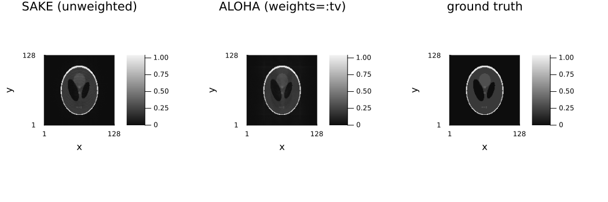
On this particular phantom and sampling pattern, unweighted SAKE is already the more accurate of the two — the TV-sparsity assumption the weighting encodes is not the dominant structure here, so the extra constraint mostly adds bias rather than resolving power. The weighting is also not free: it roughly doubles the work per iteration (each weight in the collection contributes its own lift and SVD, combined through a proximal average). Reach for weights when a plain structured-low-rank result is not accurate enough and the object plausibly has the transform-domain sparsity being assumed — not as a default upgrade.
References
[1] P. J. Shin, P. E. Z. Larson, M. A. Ohliger, M. Elad, J. M. Pauly, D. B. Vigneron, and M. Lustig, "Calibrationless parallel imaging reconstruction based on structured low-rank matrix completion," Magnetic Resonance in Medicine, vol. 72, no. 4, pp. 959–970, 2014, doi: 10.1002/mrm.24997 — SAKE.
[2] J. P. Haldar, "Low-rank modeling of local k-space neighborhoods (LORAKS) for constrained MRI," IEEE Transactions on Medical Imaging, vol. 33, no. 3, pp. 668–681, 2014, doi: 10.1109/TMI.2013.2293974 — LORAKS.
[3] K. H. Jin, D. Lee, and J. C. Ye, "A general framework for compressed sensing and parallel MRI using annihilating filter based low-rank Hankel matrix," IEEE Transactions on Computational Imaging, vol. 2, no. 4, pp. 480–495, 2016, doi: 10.1109/TCI.2016.2601296 (arXiv:1504.00532, open access) — ALOHA, the weights argument.
[4] Z.-P. Liang, "Spatiotemporal imaging with partially separable functions," in Proc. IEEE International Symposium on Biomedical Imaging (ISBI), 2007, pp. 988–991, doi: 10.1109/ISBI.2007.357020.
[5] H. Pedersen, S. Kozerke, S. Ringgaard, K. Nehrke, and W. Y. Kim, "k-t PCA: Temporally constrained k-t BLAST reconstruction using principal component analysis," Magnetic Resonance in Medicine, vol. 62, no. 3, pp. 706–716, 2009, doi: 10.1002/mrm.22052.
[6] F. H. Petzschner, I. P. Ponce, M. Blaimer, P. M. Jakob, and F. A. Breuer, "Fast MR parameter mapping using k-t principal component analysis," Magnetic Resonance in Medicine, vol. 66, no. 3, pp. 706–716, 2011, doi: 10.1002/mrm.22826.
[7] J. I. Tamir, M. Uecker, W. Chen, P. Lai, M. T. Alley, S. S. Vasanawala, and M. Lustig, "T2 shuffling: Sharp, multicontrast, volumetric fast spin-echo imaging," Magnetic Resonance in Medicine, vol. 77, no. 1, pp. 180–195, 2017, doi: 10.1002/mrm.26102.
Further reading
From Questions and Answers in MRI:
- Parallel imaging: the two types — the image-domain / k-space-domain split the signal models here sit on either side of.
- Partial Fourier and phase conjugate symmetry — the symmetry the structured low-rank methods exploit without being told about it.
- Compressed sensing — the background for calibrationless reconstruction.
Environment
print_versions()Julia Version 1.13.1
Commit 96ca370cf0e (2026-09-25 19:34 UTC)
Build Info:
Official https://julialang.org release
Platform Info:
OS: Linux (x86_64-linux-gnu)
CPU: 4 × AMD EPYC 9V74 80-Core Processor
WORD_SIZE: 64
LLVM: libLLVM-20.1.8 (ORCJIT, znver4)
GC: Built with stock GC
Threads: 2 default, 1 interactive, 2 GC (on 4 virtual cores)
Environment:
JULIA_PKG_SERVER_REGISTRY_PREFERENCE = eager
JULIA_NUM_THREADS = 2
Ristretto 0.1.0 (dev)
AbstractOperators not loaded
FFTWOperators not loaded
NFFTOperators not loaded
WaveletOperators not loaded
DSPOperators not loaded
ContourletOperators not loaded
StructuredOptimization not loaded
ProximalOperators not loaded
ProximalAlgorithms not loaded
OperatorCore not loaded
NestedThreading 0.1.2